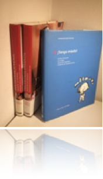
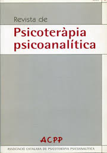

Publicacions
Llibres i articles sobre psicologia, psicoteràpia i salut mental.
Llibres
- Psicología Infantil. Asesor de padres. ISBN: 84-494-2588-1. Editorial Océano.
- Psicología Juvenil. Asesor de padres. ISBN: 84-494-2449-6. Editorial Océano.
- La salud de nuestros hijos. Tengo miedo!. Barcelona, 2004. ISBN: 84-672-0571-7. Editorial Círculo de Lectores.

Articles
Revista de l'Associació Catalana de Psicoteràpia Psicoanalítica
- Susanna Tres Coca, Emergència climàtica i salut mental, Revista de psicoteràpia psicoanalítica de l'ACPP, núm. 11 (2023). Llegir
- Susanna Tres Coca, De l’ecoansietat a la resiliència. El paper de la psicologia en la consciència ecològica i l'acció transformadora, Revista de psicoteràpia psicoanalítica de l'ACPP, núm. 11 (2023). Llegir

Diari Ara – suplement Criatures
- Noves tecnologies i desenvolupament saludable (2019) Llegir
- Desprendre's dels objectes (2018) Llegir
- Protegir o sobreprotegir (2017) Llegir
- Acompanyar els fills en el descobriment de la sexualitat (2016) Llegir
Revista Salud y Vida – La Vanguardia
- Cambios psicológicos en el ciclo menstrual (2002)
- Autoestima (2002)
- Potencia tu empatía (2002)
- Comunicación de los sentimientos en la pareja (2002)
- La seducción (2002)
- La creatividad (2002)
- Autoconocimiento a través de la pareja (2002)
- Sobrevivir una pérdida (2002)
- Conflicto en las relaciones de pareja (2003)
- La relación con nuestros padres (2003)
- El silencio interior (2003)
- El lenguaje no verbal (2003)
- Cultivar la empatía (2003)
- Fidelidad en la pareja (2003)
- Problemas de convivencia (2003)
- La sensualidad (2003)
- Armonía entre trabajo y vida personal (2003)
- Intimidad sexual en la pareja (2003)
- Las expectativas en la pareja (2003)
- El sentido del humor y la salud (2004)
- Manejar el enfado (2004)
- La familia de la pareja (2004)
- La pareja y la vida social (2004)
- El miedo al compromiso (2004)
- La infertilidad (2004)
- Gestionar el ocio (2004)
- La pareja como espejo (2004)
- Falta de deseo sexual (2004)
- Separaciones conflictivas (2004)
- Educar sin pareja (2004)
- Cómo escogemos la pareja (2005)
- Cuando llega el primer hijo (2005)
- Adoptar un niño (2005)
- La enfermedad en la familia (2005)
- Dudas en la pareja (2005)
- Adicción a las relaciones (2005)
- Cuando los hijos llegan a la adolescencia (2005)
- Egoísmo en las relaciones (2005)
- Enfermedades psicosomáticas (2005)
- Insatisfacción en el trabajo (2005)
- Miedo a enfermar (2005)
- Dar lo mejor de nosotros (2006)
- El cansancio crónico (2006)
Revista Integral
- La nueva pareja (2002)
- Superar una crisis (1998)
- Confía en tu intuición (1998)
- Vencer la hipocondría (2004)
Revista Cuerpo Mente
- Pareja ¿iguales o complementarios? (2003)
- Gana empatía (2003)
- Afrontar los cambios (2003)
- Vencer la rutina en la pareja (2004)
- Mejorar con los años (2004)
- La necesidad de agradar (2004)
- El síndrome de Peter Pan
- La pareja ante la infertilidad
- La virtud de no aplazar
- Llevarse bien con los alimentos (2016)
Revista Mente Sana
- Cómo entender y gestionar nuestras emociones (2005)
- Aprender a escuchar a los demás (2005)
- Si tú ganas, yo gano (2005)
- 7 llaves para desarrollar tu potencial (2005)
Contacte
BarcelonaC/ Casanova 46, 4rt 1a
Mb: 696 453 277
Email: trescoca@gmail.com Sant Just Desvern
Mb: 696 453 277
Email: trescoca@gmail.com